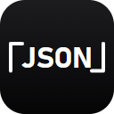

JSON Duo 图标 · 改前 / 改后（真实尺寸）
前两条是真实尺寸的 16px 工具栏实景（浅色 / 深色主题），这是唯一的判断依据；后面是 16px 放大 8 倍与 32 / 48 / 128 的实际尺寸。改后：16/32px 换成一对花括号 { }（分置左右边、中间留空）（四字母在此尺寸墨迹仅约 3 物理像素，必然糊），48px 起保持完整字标 「JSON」 + 角括号，品牌观感延续。
改前（1.1.7 线上）16px 四字母「JSON」
 JSON Duo · 双栏 JSON 工作台✕
JSON Duo · 双栏 JSON 工作台✕JSON Duo · 双栏 JSON 工作台✕ 

改后（方案 E）16px 花括号 { } 分置两侧
 JSON Duo · 双栏 JSON 工作台✕
JSON Duo · 双栏 JSON 工作台✕JSON Duo · 双栏 JSON 工作台✕ 站点 favicon（浏览器把 128px 源缩到 16 / 24px 显示）
标签页里那枚小图标吃的就是 favicon，所以它必须用小尺寸字形；拿「JSON」版直接缩下去，结果与改前一样糊。
改前 favicon128px 的「JSON」版
JSON Duo · 双栏 JSON 工作台✕
JSON Duo · 双栏 JSON 工作台✕
改后 favicon128px 的小尺寸字形版
JSON Duo · 双栏 JSON 工作台✕
JSON Duo · 双栏 JSON 工作台✕